From here you will have a tab on the side. Units will allow the user to change the units of measurement from metric to Imperial and vice versa. The two drop-down menus, Node 1 and Node 2, which will allow the user to compare them. The Time Frame will also allow the user to see the data for the current time, last 24 hours, and last 7 days for those nodes. Opening up the dashboard will allow the user to choose 3 different tabs, (Node Map, Heat Map, Compare Nodes) The last 3 tabs (Choose AOT Data, Choose Dark Sky Data, Choose OpenAQ Data) will allow the user to pick which data they want to display for the certain data set.
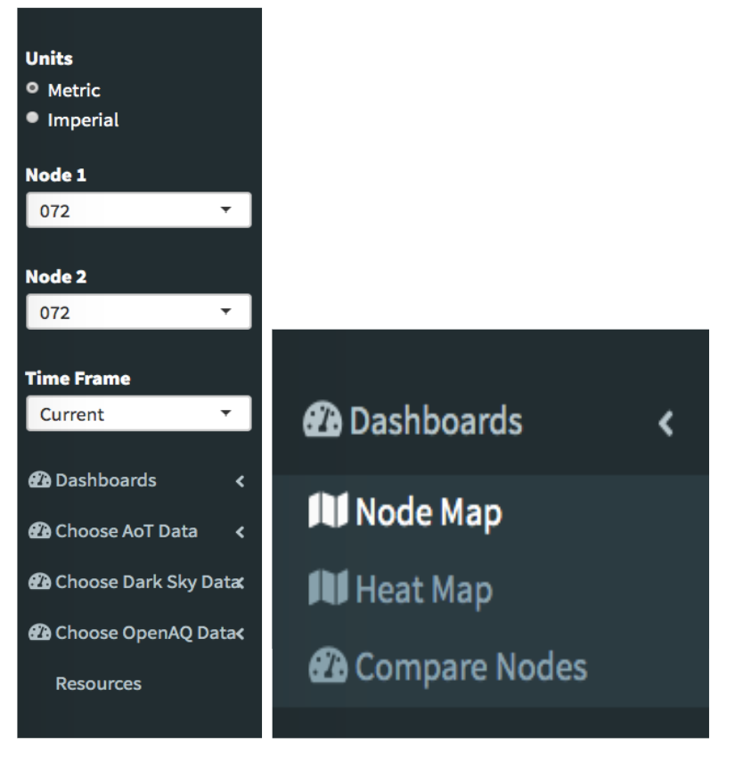
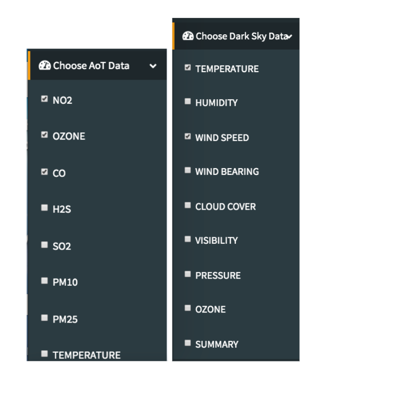
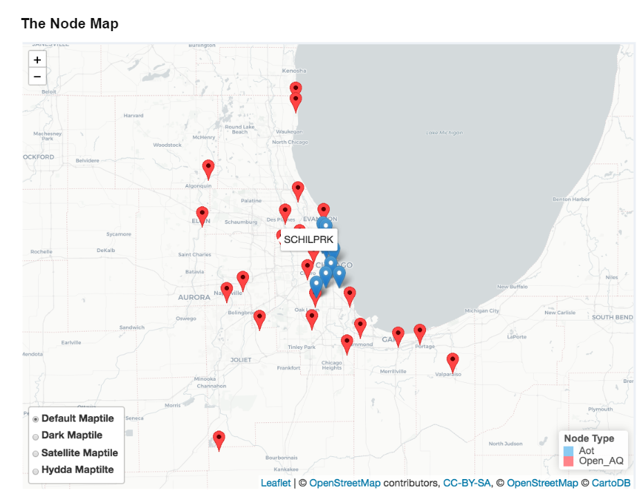
When the user chooses The Node Map option, they are greeted to this screen, an interactive map. With this, the user can pick any of the makers on the leaflet. There will select the node that is within that location. They can also 3 different option to change the background of the map if need be to a dark, Satellite or Hydda background.
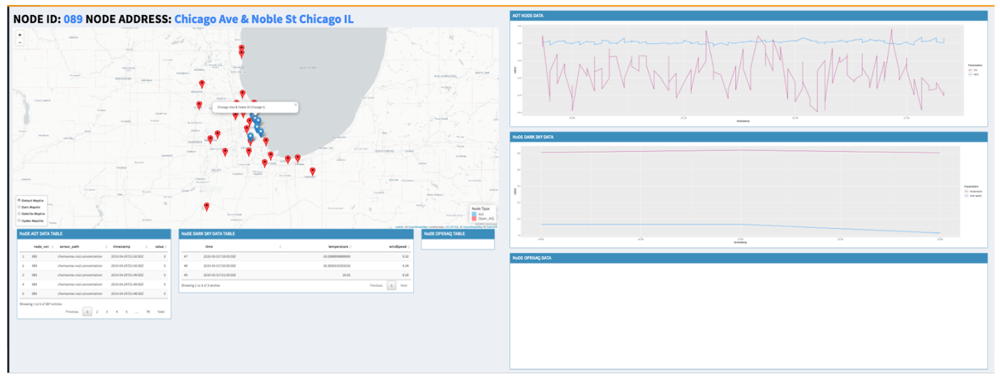
When the user selects one of them on the leaflet map it will display the data for that node. When a Aot data is selected, the Open AQ data tables will stay blank since there is no AQ data in an AoT node. There, users can also select what pollutant they want to see in the line\table chart with the “Choose AOT Data, Choose Dark Sky Data, Choose OpenAQ Data” tab.
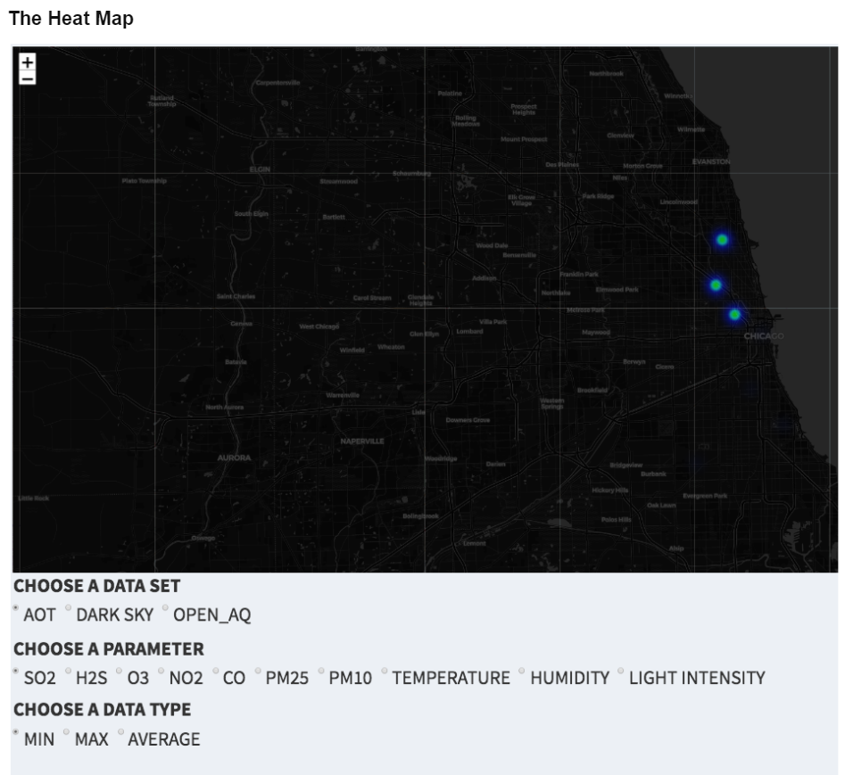
When the user is under the heat map tab, they can now see a heat map of the pollutants for each of the data sets. Since each of the have different pollutants type, the radio buttons are dynamic so the user can only select the pollutants that are within that Data set. The user can also choose if they want to see the Min\ max\ Avg of that dataset pollutants.
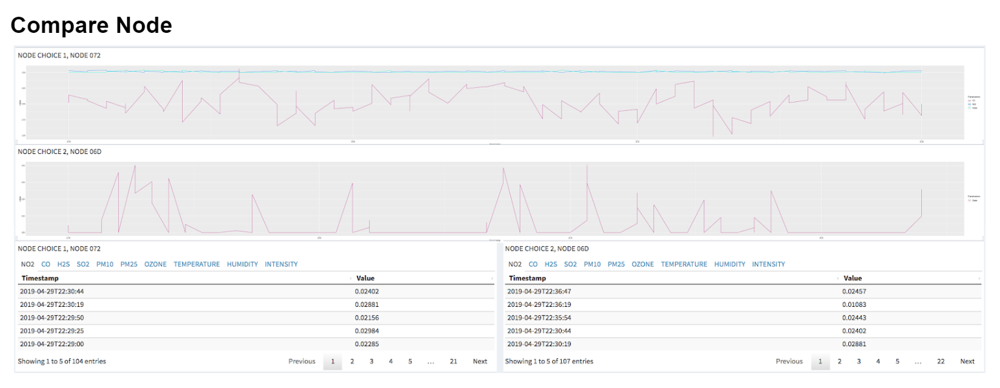
The last tab in the Dashboard, there are 2 line graphs and 2 table charts. The user can now use the dropdown menu that is on the side in order to compare two nodes. The user can also use the “Choose Aot Data” on the side panel in order to select what pollutant the user wants to see. They can now use these to compare two nodes. If there is no data for that node for any of the pollutant.
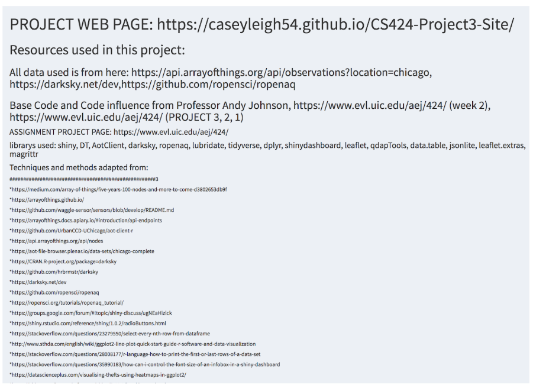
The last tab on the sidebar is the resource tab, which will display all the sources used for this project as well as who created it, as well as links to the project on the shiny server.
Data
This project uses 3 different sets of data,
Array of Things, DarkSky, and OpenAQ
This project uses 3 different sets of data (Array of Things, DarkSky, and OpenAQ) which is all data that is collected in real time, so when the temperature outside in chicago goes down, you will see that in the data. There is one of the devices that is used for collecting data around Chicago.
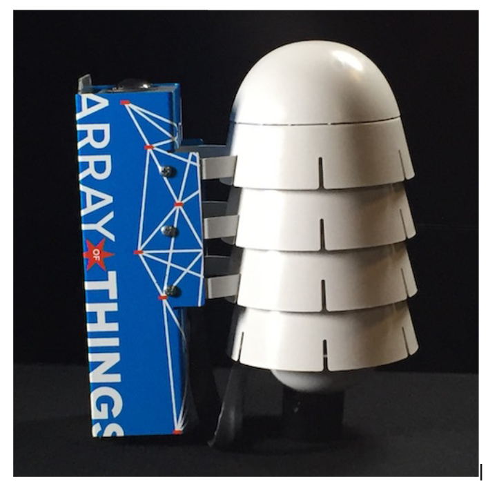
For the Array of Things, the website states that this is basically a “fitness tracker” for the city of Chicago. The reason they are monitoring all this data is so that it can allow researchers to work on the cleanliness of the city. This is also data that it open to the public and is free for anyone to use.
If you would like to learn more about Array of things, here a short video introduction on it as well as an article on it.
The Open AQ data is also similar to the Aot data where it is free to use API so that user can view that air quality data for that node within the city.
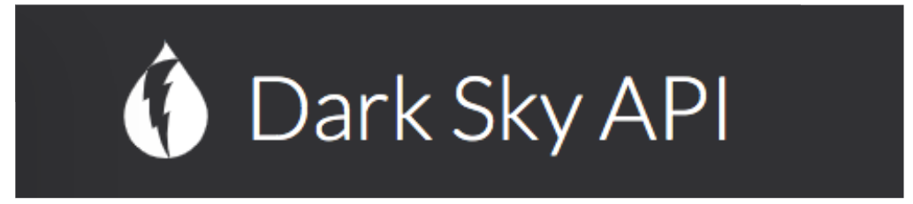
The dark sky, like the last two, are free to use API. This API is used for more weather-related data such as wind, clouds, pressure, etc. This API is more used for the monitoring of the weather.
The user can find the data here for all three classifications of data.
For this project, We used this data in the in order to give it more of a visualization of it. Since all the data is in real time, we can use all the dataset to see the current attributes for that dataset in real time. These APIs also have a history of past data. We used this to display the data for that last 7 days as well as the last 30 days. We also used this data to see the pollutants of certain spots within the city using a leaflet map.
Instructions of how to install RStudio and R.
The following links will take the user to the websites where the user will need to download and install R and RStudio
Find the operating system that best fits you and install the latest version.
Most R shiny code requires packages to run. In Order to install packages simply go to the command line and enter:
install.packages(“(The Package you want to install)”)
The packages you will need to install are the following;
Shiny DTl
AotClient
darksky
Ropenaq
lubridate
Tidyverse
dplyr
shinydashboard
leaflet
qdapTools
data.table
jsonlite
leaflet.extras
magrittr
After this the user Rstudio should be up to date in order to run the project’s code.
In order to see this shiny, the user would need to frist download all the files that are above. The would then need to run the Project3.Rproj in order to run it. It should open in R studio, If you do not have RStudio please go to the top of the page and follow the instructions of how to install and run Rstudio.
For this particular RShiny code will require the user to get an API key in order to run.
To do this go to the following websites to get the API key for DarkSky, https://darksky.net/dev. Once you get your key, place it in the variable:
Sys.setenv(DARKSKY_API_KEY = 'YOUR KEY HERE’)
After all this just hit the run app button on the top toolbar to run the program.
You can also find out more about building applications with Shiny here: http://shiny.rstudio.com/
Interesting Things
Some of the things that we found interesting within these data sets is that according to the Open AQ data, Chicago has the problem with O3, as shown below,
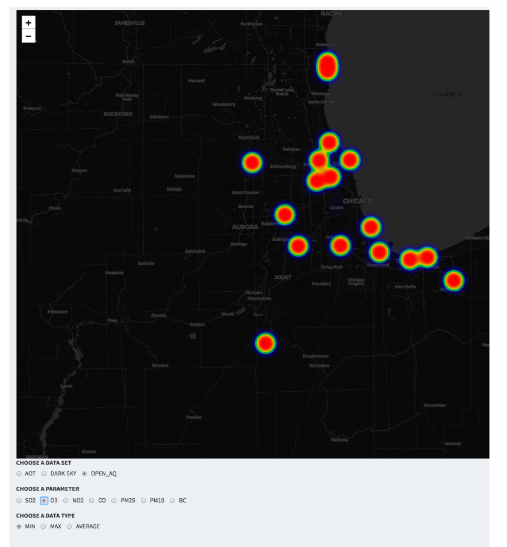
However, if we look over at the at dataset for AoT, this is not the case at all. It seem like 03 isn't something that is that big of an issue enough to be monitored more closely by Aot but it is by Open AQ. There also doesn't seem to be any problem with ozone within downtown chicago but there seem to be a big problem of it around the outside of the city.
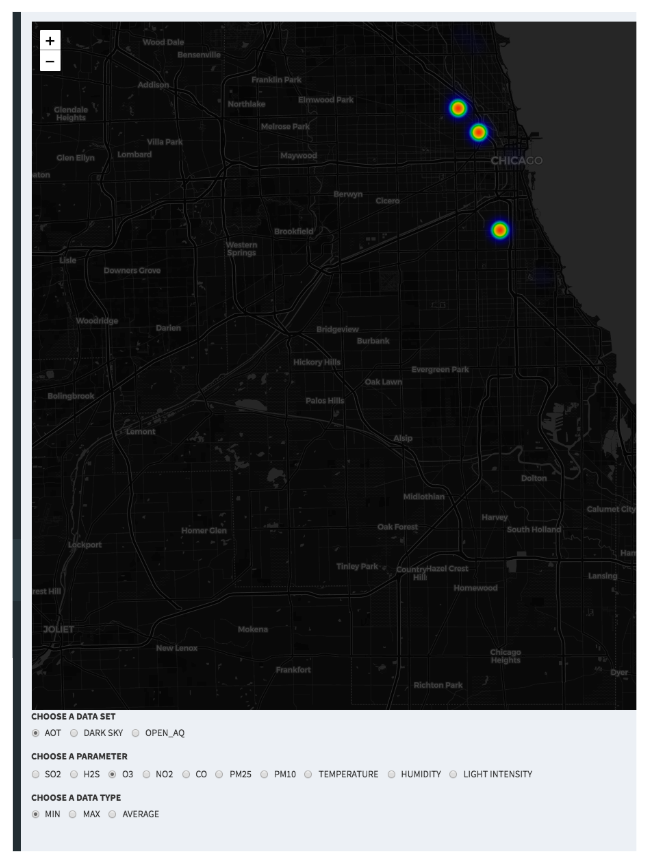
Another interesting find is that when comparing the Aot data nodes 004(upper north side) and 086(downtown Chicago) we see that the pollutants are a lot more unstable, compared to the upper north side. Things such as Ozone and NO2 are the same, but when it comes to SO2, The north side is way lower while downtown its high.
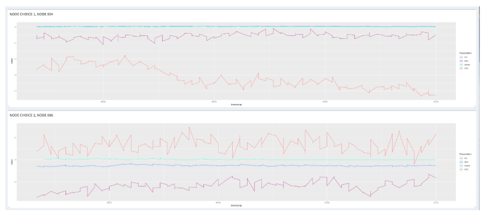
Anything thing that we found is that sometimes the nodes go out and they leave a huge dip in the data. They start producing 0s which can mess up the data, such as Min \ Max \ Avg. The image below will show you how the data looks when the node goes offline. If someone was using this as research it could potentially destroy their results, making the research inaccurate.
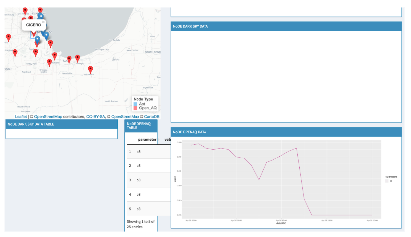
This is the color pallet we chose to use for the project, as you can see although these colors are random, with all the data being in line graphs there is no need for a coorilation between colors, only so that the user can differenciate between parameters in the line graphs.
The image below shows the color blind test for the 3 most common types of colorblindness.